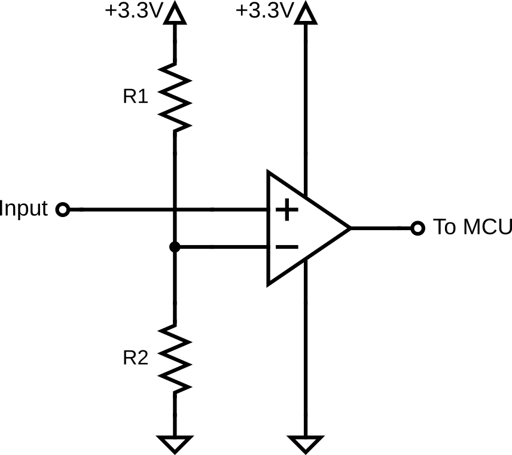
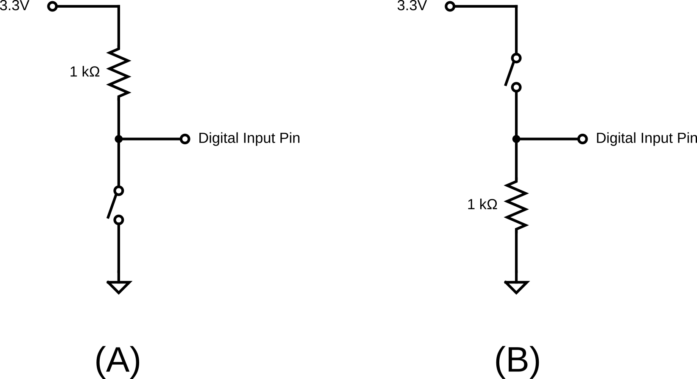

Lab 2 : Comparator and Digital I/O
Seneca Polytechnic SEP600 Embedded Systems
Introduction
Documentation of the Cortex-M4 instruction set, board user's guide, and the microcontroller reference manual can be found here:
Documentation of the Freedom K64 and K66 board and it's microcontroller can be found here:
- FRDM-K64F Freedom Module User’s Guide (PDF)
- Kinetis K64 Reference Manual (PDF)
- FRDM-K64F Mbed Reference
- FRDM-K64F Mbed pinnames
- FRDM-K66F Freedom Module User’s Guide (PDF)
- Kinetis K66 Reference Manual (PDF)
- FRDM-K66F Mbed Reference
- FRDM-K66F Mbed pinnames
Documentation of the Cortex-M4 instruction set can be found here:
- Arm Cortex-M4 Processor Technical Reference Manual Revision (PDF)
- ARMv7-M Architecture Reference Manual (PDF)
Materials
- Safety glasses (PPE)
- Breadboard
- Jumper Wires
- (1x) Op-Amp (LM358, LM324 or similar)
- Various 1kΩ-10kΩ Resistor
- Various 0.1-10µF Capacitor
- (2x) Button or Switch
Preparation
Read over the lab manual for this lab and acquire the necessary materials for this lab.
Procedures
Part 1: Comparator and Digital Input

Figure 2.1
-
Acquire a breadboard, an Op-Amp, jumper wires, and the necessary resistors to assemble the circuit given below in Figure 2.1.
-
Choose R1 and R2 so the reference value for the comparator is at 1V. Remember that the maximum power of a typical through-hole resistor is 1/4W. Double-check the maximum power of the resistor you are using to choose the proper resistance value.
-
Connect the output of the variable power supply to the input of the comparator.
-
Connect the output of the comparator to any PTXXX pin on the FRDM-K64F. All the numbered pins (PTXXX) can also be used as DigitalIn and DigitalOut interfaces. For FRDM-K66F, refer to the FRDM-K66F Mbed Reference.

Figure 2.2 FRDM-K64F Header Pinout from FRDM-K64F Mbed Reference.
-
Ensure the negative connector of the power supply, your comparator, and your microcontroller all share a common ground reference voltage.
-
Program the following code into your microcontroller.
int main() { DigitalOut led(LED1); // Initialise the digital pin LED1 as an output DigitalIn comparator(PTXXX); // Initialise a digital input object. // Replace PTXXX with your input pin while (true) { if (comparator) { led = 0; // LED ON } else { led = 1; // LED OFF } } }Replace PTXXX with the pin you connected the comparator output to.
-
Once the code has been uploaded, set the power supply output to 0.5V and turn on the power supply. Did the red LED turn ON or OFF?
-
Raise the power supply voltage to 2V. Did the red LED turn ON or OFF now?
Do not raise the power supply voltage higher than 5V -
Ensure you fully understand how the power supply voltage is affecting the comparator's output and how the signal is being read by the microcontoller as a digital input.
Part 2: Pull-Up and Pull-Down

Figure 2.3 (A) Pull-Up Input. (B) Pull-Down Input.
-
Without disassebling the Part 1 circuit, acquire a 1kΩ (or higher resistance value resistor), a button (or using jumper wires as a switch), and jumper wires to assemble a Pull-Up circuit as given above and attach the output signal to one of the digital input pins of your microcontroller
-
What is the current passing through the resistor when the switch is closed? Is this a safe current for the resistor? How can you modify the circuit to reduce it's energy consumption?
-
Modify the code from Part 1 to include an additional DigitalIn object for reading the button input. The new logic will be as follow:
- Only if the input to the comparator is above 1V, then the Red LED will turn ON if the button is pressed. ie. the comparator input act as the master switch.
Remember, you'll need to set up a digital pin input object for the button input first. Use serial print out for debugging or information as necessary.
-
Run and test your program.
-
Without taking apart your Pull-up circuit, assemble another Pull-Down circuit as given above and attach the signal to another of the digital input pins of your microcontroller.
-
Modify your code so the second switch you assembled will trigger the second LED (LED2) to turn on when pressed. Same as before, the LED will only be able to be swtiched on if the input to the comparator is above 1V. Keep in mind you are now using a Pull-down circuit as input.
-
Run and test your program.
-
Ensure you fully understand digital input and output as well as Pull-Up and Pull-down circuit. Play around with the code or circuit as necessary to increase your understanding.
Part 3: PWM Output
-
Without removing your comparator, pull-up and pull-down circuit, Connect a PWM-capable pin of your microcontroller (ones with purple PWM label in the pinout diagram) to CH1 of the DSO. Refer to the microcontroller board manual for details on pin assignment. Connect DSO ground to the common ground of your circuit.
-
Modify your code to set up a PWM pin.
int main() { ... PwmOut pwm(PTXXX); // Replace PTXXX with your pwm pin ... } -
Add the following code to start the PWM output. Use a period that is at least twice your RC time constant.
int main() { ... pwm.period(XXXf); // set pwm period in s pwm.write(0.50f); // set pwm duty cycle, 0.5f = 50% ... } -
Run and test your program. Turn on the DSO and adjust the settings to see CH1 as a stable square wave. What do you notice about the ratio between the ON time and OFF time of the square wave? What is the PWM frequency?
-
Modify your code so one of the button will also increase the PWM duty cycle by 10% (ie. 60%) and the other button will decrease the duty cycle by 10% (ie. 40%). The increase and decrease should happen in real-time right after the button press. Use serial print out for debugging or information as necessary.
-
Ensure you fully understand the concept of PWM.
Once you've completed all the steps above (and ONLY when you are ready as you'll only have one opportunity to demo), ask the lab professor or instructor over and demostrate that you've completed the lab. You might be asked to explain some of the concepts you've learned in this lab.